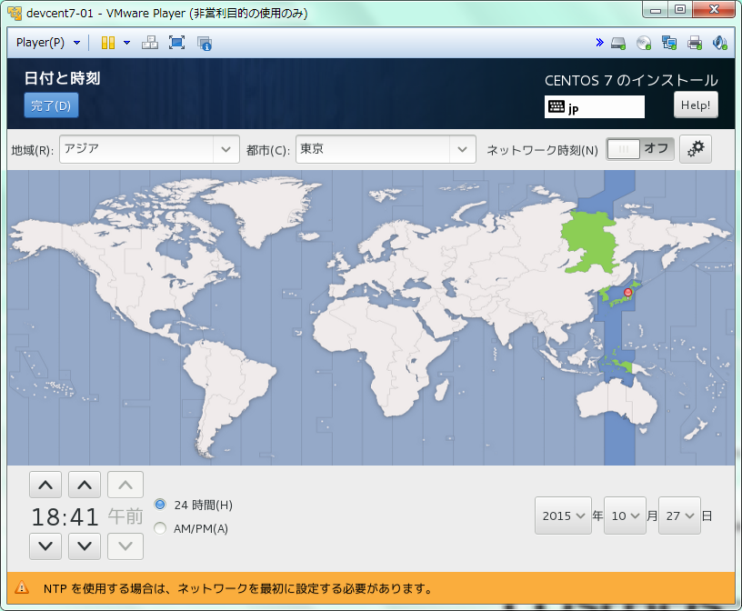

日付と時刻の設定
OSで利用するシステム時刻の設定を行う
サーバの利用環境に合わせてゾーン情報を指定します
ここでは日本で利用しているので 「アジア/東京」 を選択しています
ネットワーク時刻同期サービス（NTP）の設定はインストール後に行うので、ここではOFFにし割愛する

システムクロックはデフォルトでUTCを利用するような設定画面になっている
Linuxの時刻調整には「地域標準時(LOCAL)」と「協定世界時(UTC)」がある
選択地域の設定を変更する事で地域標準時にする事も可能
地域標準時(LOCAL) UTC/GMTから取得した時刻にタイムゾーンの標準時を計算した時間
UTC/GMT ± タイムゾーン協定世界時(UTC) 原子時計により精密に時間が調整されている世界共通の標準時間
閏秒の調整も行われている
基本的にOSをただ利用している分にはほとんど互いの違いを意識することはないが、
再起動等によりシステム時刻がリセットされ、ハードウェア時刻から時刻計算するときや
アプリケーションがOS時刻を取得したい場合、タイムゾーンも考慮する必要があるなど地域標準時にするメリットがない
※ひとつの筐体に複数のOSをブートしている場合はまた別の問題がある
UTCはその点を考慮する必要がないため、UTCがデフォルト、推奨値になっている
本手順はインストール後にも変更可能です